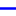

<!doctype html>
<html lang="en">
    <head>
        <meta charset="utf-8">
        <meta http-equiv="X-UA-Compatible" content="IE=edge">
        <meta name="viewport" content="initial-scale=1,user-scalable=no,maximum-scale=1,width=device-width">
        <meta name="mobile-web-app-capable" content="yes">
        <meta name="apple-mobile-web-app-capable" content="yes">
        <link rel="stylesheet" href="css/leaflet.css"><link rel="stylesheet" href="css/L.Control.Locate.min.css">
        <link rel="stylesheet" href="css/qgis2web.css"><link rel="stylesheet" href="css/fontawesome-all.min.css">
        <style>
        #map {
            width: 895px;
            height: 500px;
        }
        </style>
        <title></title>
    </head>
    <body>
        <div id="map">
        </div>
        <script src="js/qgis2web_expressions.js"></script>
        <script src="js/leaflet.js"></script><script src="js/L.Control.Locate.min.js"></script>
        <script src="js/leaflet.rotatedMarker.js"></script>
        <script src="js/leaflet.pattern.js"></script>
        <script src="js/leaflet-hash.js"></script>
        <script src="js/Autolinker.min.js"></script>
        <script src="js/rbush.min.js"></script>
        <script src="js/labelgun.min.js"></script>
        <script src="js/labels.js"></script>
        <script src="data/LIMITEDEPARTAMENTAL_2.js"></script>
        <script src="data/Qhapaqan_3.js"></script>
        <script>
        var highlightLayer;
        function highlightFeature(e) {
            highlightLayer = e.target;

            if (e.target.feature.geometry.type === 'LineString') {
              highlightLayer.setStyle({
                color: '#ffff00',
              });
            } else {
              highlightLayer.setStyle({
                fillColor: '#ffff00',
                fillOpacity: 1
              });
            }
            highlightLayer.openPopup();
        }
        var map = L.map('map', {
            zoomControl:true, maxZoom:28, minZoom:1
        }).fitBounds([[-18.27344993871672,-80.34240590045778],[-9.95821346064606,-65.43175093074473]]);
        var hash = new L.Hash(map);
        map.attributionControl.setPrefix('<a href="https://github.com/tomchadwin/qgis2web" target="_blank">qgis2web</a> &middot; <a href="https://leafletjs.com" title="A JS library for interactive maps">Leaflet</a> &middot; <a href="https://qgis.org">QGIS</a>');
        var autolinker = new Autolinker({truncate: {length: 30, location: 'smart'}});
        L.control.locate({locateOptions: {maxZoom: 19}}).addTo(map);
        var bounds_group = new L.featureGroup([]);
        function setBounds() {
        }
        map.createPane('pane_Positron_0');
        map.getPane('pane_Positron_0').style.zIndex = 400;
        var layer_Positron_0 = L.tileLayer('http://a.basemaps.cartocdn.com/light_all/{z}/{x}/{y}.png', {
            pane: 'pane_Positron_0',
            opacity: 1.0,
            attribution: '<a href="https://cartodb.com/basemaps/">Map tiles by CartoDB, under CC BY 3.0. Data by OpenStreetMap, under ODbL.</a>',
            minZoom: 1,
            maxZoom: 28,
            minNativeZoom: 0,
            maxNativeZoom: 20
        });
        layer_Positron_0;
        map.addLayer(layer_Positron_0);
        map.createPane('pane_DarkMatter_1');
        map.getPane('pane_DarkMatter_1').style.zIndex = 401;
        var layer_DarkMatter_1 = L.tileLayer('http://a.basemaps.cartocdn.com/dark_all/{z}/{x}/{y}.png', {
            pane: 'pane_DarkMatter_1',
            opacity: 0.851,
            attribution: '<a href="https://cartodb.com/basemaps/">Map tiles by CartoDB, under CC BY 3.0. Data by OpenStreetMap, under ODbL.</a>',
            minZoom: 1,
            maxZoom: 28,
            minNativeZoom: 0,
            maxNativeZoom: 20
        });
        layer_DarkMatter_1;
        map.addLayer(layer_DarkMatter_1);
        function pop_LIMITEDEPARTAMENTAL_2(feature, layer) {
            layer.on({
                mouseout: function(e) {
                    for (i in e.target._eventParents) {
                        e.target._eventParents[i].resetStyle(e.target);
                    }
                    if (typeof layer.closePopup == 'function') {
                        layer.closePopup();
                    } else {
                        layer.eachLayer(function(feature){
                            feature.closePopup()
                        });
                    }
                },
                mouseover: highlightFeature,
            });
            var popupContent = '<table>\
                    <tr>\
                        <td colspan="2">' + (feature.properties['NOMBDEP'] !== null ? autolinker.link(feature.properties['NOMBDEP'].toLocaleString()) : '') + '</td>\
                    </tr>\
                </table>';
            layer.bindPopup(popupContent, {maxHeight: 400});
        }

        function style_LIMITEDEPARTAMENTAL_2_0() {
            return {
                pane: 'pane_LIMITEDEPARTAMENTAL_2',
                opacity: 1,
                color: 'rgba(253,191,111,1.0)',
                dashArray: '',
                lineCap: 'butt',
                lineJoin: 'miter',
                weight: 1.0, 
                fill: true,
                fillOpacity: 1,
                fillColor: 'rgba(190,207,80,0.0)',
                interactive: true,
            }
        }
        map.createPane('pane_LIMITEDEPARTAMENTAL_2');
        map.getPane('pane_LIMITEDEPARTAMENTAL_2').style.zIndex = 402;
        map.getPane('pane_LIMITEDEPARTAMENTAL_2').style['mix-blend-mode'] = 'normal';
        var layer_LIMITEDEPARTAMENTAL_2 = new L.geoJson(json_LIMITEDEPARTAMENTAL_2, {
            attribution: '',
            interactive: true,
            dataVar: 'json_LIMITEDEPARTAMENTAL_2',
            layerName: 'layer_LIMITEDEPARTAMENTAL_2',
            pane: 'pane_LIMITEDEPARTAMENTAL_2',
            onEachFeature: pop_LIMITEDEPARTAMENTAL_2,
            style: style_LIMITEDEPARTAMENTAL_2_0,
        });
        bounds_group.addLayer(layer_LIMITEDEPARTAMENTAL_2);
        map.addLayer(layer_LIMITEDEPARTAMENTAL_2);
        function pop_Qhapaqan_3(feature, layer) {
            layer.on({
                mouseout: function(e) {
                    for (i in e.target._eventParents) {
                        e.target._eventParents[i].resetStyle(e.target);
                    }
                    if (typeof layer.closePopup == 'function') {
                        layer.closePopup();
                    } else {
                        layer.eachLayer(function(feature){
                            feature.closePopup()
                        });
                    }
                },
                mouseover: highlightFeature,
            });
            var popupContent = '<table>\
                    <tr>\
                        <td colspan="2">' + (feature.properties['TipoCamino'] !== null ? autolinker.link(feature.properties['TipoCamino'].toLocaleString()) : '') + '</td>\
                    </tr>\
                    <tr>\
                        <td colspan="2">' + (feature.properties['CAPAQ ÑAM'] !== null ? autolinker.link(feature.properties['CAPAQ ÑAM'].toLocaleString()) : '') + '</td>\
                    </tr>\
                    <tr>\
                        <td colspan="2">' + (feature.properties['Shapefile'] !== null ? autolinker.link(feature.properties['Shapefile'].toLocaleString()) : '') + '</td>\
                    </tr>\
                </table>';
            layer.bindPopup(popupContent, {maxHeight: 400});
        }

        function style_Qhapaqan_3_0(feature) {
            switch(String(feature.properties['TipoCamino'])) {
                case 'Camino Afectado':
                    return {
                pane: 'pane_Qhapaqan_3',
                opacity: 1,
                color: 'rgba(232,215,27,1.0)',
                dashArray: '',
                lineCap: 'square',
                lineJoin: 'bevel',
                weight: 3.0,
                fillOpacity: 0,
                interactive: true,
            }
                    break;
                case 'Camino Identificado':
                    return {
                pane: 'pane_Qhapaqan_3',
                opacity: 1,
                color: 'rgba(0,0,255,1.0)',
                dashArray: '',
                lineCap: 'square',
                lineJoin: 'bevel',
                weight: 3.0,
                fillOpacity: 0,
                interactive: true,
            }
                    break;
                case 'Camino Registrado':
                    return {
                pane: 'pane_Qhapaqan_3',
                opacity: 1,
                color: 'rgba(27,203,33,1.0)',
                dashArray: '',
                lineCap: 'square',
                lineJoin: 'bevel',
                weight: 3.0,
                fillOpacity: 0,
                interactive: true,
            }
                    break;
                case 'proyeccion de camino por ausencia':
                    return {
                pane: 'pane_Qhapaqan_3',
                opacity: 1,
                color: 'rgba(19,245,177,1.0)',
                dashArray: '',
                lineCap: 'square',
                lineJoin: 'bevel',
                weight: 3.0,
                fillOpacity: 0,
                interactive: true,
            }
                    break;
                case 'proyeccion de camino por daños':
                    return {
                pane: 'pane_Qhapaqan_3',
                opacity: 1,
                color: 'rgba(255,127,0,1.0)',
                dashArray: '',
                lineCap: 'square',
                lineJoin: 'bevel',
                weight: 3.0,
                fillOpacity: 0,
                interactive: true,
            }
                    break;
                case 'proyeccion de camino por reemplazo':
                    return {
                pane: 'pane_Qhapaqan_3',
                opacity: 1,
                color: 'rgba(73,12,186,0.9647058823529412)',
                dashArray: '',
                lineCap: 'square',
                lineJoin: 'bevel',
                weight: 3.0,
                fillOpacity: 0,
                interactive: true,
            }
                    break;
                case 'Trazo de Camino':
                    return {
                pane: 'pane_Qhapaqan_3',
                opacity: 1,
                color: 'rgba(221,0,0,1.0)',
                dashArray: '',
                lineCap: 'square',
                lineJoin: 'bevel',
                weight: 2.0,
                fillOpacity: 0,
                interactive: true,
            }
                    break;
            }
        }
        map.createPane('pane_Qhapaqan_3');
        map.getPane('pane_Qhapaqan_3').style.zIndex = 403;
        map.getPane('pane_Qhapaqan_3').style['mix-blend-mode'] = 'normal';
        var layer_Qhapaqan_3 = new L.geoJson(json_Qhapaqan_3, {
            attribution: '',
            interactive: true,
            dataVar: 'json_Qhapaqan_3',
            layerName: 'layer_Qhapaqan_3',
            pane: 'pane_Qhapaqan_3',
            onEachFeature: pop_Qhapaqan_3,
            style: style_Qhapaqan_3_0,
        });
        bounds_group.addLayer(layer_Qhapaqan_3);
        map.addLayer(layer_Qhapaqan_3);
        var baseMaps = {};
        L.control.layers(baseMaps,{'Qhapaq Ñan<br /><table><tr><td style="text-align: center;"></td><td>Camino Afectado</td></tr><tr><td style="text-align: center;"></td><td>Camino Identificado</td></tr><tr><td style="text-align: center;"></td><td>Camino Registrado</td></tr><tr><td style="text-align: center;"></td><td>proyeccion de camino por ausencia</td></tr><tr><td style="text-align: center;"></td><td>proyeccion de camino por daños</td></tr><tr><td style="text-align: center;"></td><td>proyeccion de camino por reemplazo</td></tr><tr><td style="text-align: center;"></td><td>Trazo de Camino</td></tr></table>': layer_Qhapaqan_3,' LIMITE DEPARTAMENTAL': layer_LIMITEDEPARTAMENTAL_2,"Dark Matter": layer_DarkMatter_1,"Positron": layer_Positron_0,}).addTo(map);
        setBounds();
        </script>
    </body>
</html>
